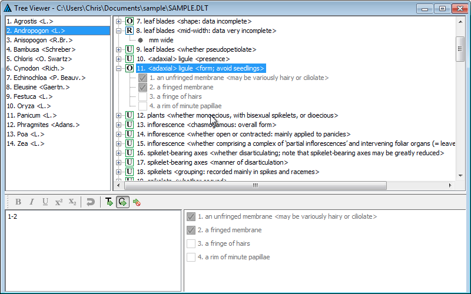

The tree view attribute editor is the default means of viewing the data. Here is an example.

The window is divided into four panes, which can be resized by the user as desired by clicking on and dragging the boundaries between them.
The Item Tree (top-left pane). This contains a list of the names and numbers of all items (taxa) in the data set. To select an item as the 'current' item for the window, click on it (i.e. on its name or number) with the left mouse button (item 3, Anisopogon, is the currently selected item in the example above). To move an item to a different position in the list, drag it with the left mouse button (that is, move the mouse while holding down the button). To copy (or move) an item, drag it with the right mouse button – a popup menu offers a choice between copying or moving. Clicking the right mouse button opens a popup menu with options for inserting, modifying or deleting items in the list. Double-clicking on an item will open the item editor dialog.
(The reader might wonder why this pane is called the item tree when it appears to be a simple list of items. In future versions of the program, it will be possible to group items hierarchically. When that is implemented, a tree structure will be used for navigating the hierarchy.)
The Character Tree (top-right pane). The upper-level nodes of this tree consist of a list of the feature descriptions of all characters in the data set. An icon to the left of the feature description indicates the character type – whether Text, Integer numeric, Real numeric, Unordered multistate, or Ordered multistate. When a node is expanded, it reveals either (for text and numeric characters, such as character 8 in the example above) a text box giving the value of that character for the selected item (and possibly the units of measurement); or (for multistate characters, such as characters 10 and 11 in the example above) a list of the states defined for that character.
To select a character as the 'current' character for the window, click on it (anywhere in its feature or state description) with the left mouse button (character 11 is the currently selected character in the example above). To move a character to a different position in the list, drag its feature description with the left mouse button. To move a state within its character, drag the state description with the left mouse button. Clicking the right mouse button opens a popup menu with options for inserting, modifying or deleting characters and their states. Double-clicking on a character will open the character editor dialog.
For multistate characters, a check box appears to the left of each state description. If a tick is present in the box, it indicates that the state applies to the currently selected item. A smaller, grey tick indicates that the state is present by implication, rather than explicit coding (see character 10 in the example). If the background colour of the box is white, the application of that state to the currently selected item may be toggled by clicking on the box.
A white background in a character-value box, as in characters 8 and 10 in the example, indicates that the attribute is 'simple', and the value(s) can be edited in situ. A grey background, as in character 11 in the example, indicates that the attribute is 'complex', defined as follows.
Complex attributes can be edited or entered only in the complex-attribute editing pane – see below.
If a character is inapplicable because of dependency relationships, a diagonal red bar appears across both the 'type' icon and the state check boxes.
The Complex-Attribute Editor (lower-left pane). This pane is a rich edit control – that is, it allows display and editing of formatting marks. It contains the DELTA encoding for the currently selected item and character, using the traditional DELTA style. Angle brackets should appear around comments, but should not be placed around text attributes. A toolbar above the pane provides controls for rendering portions of the text in bold, italics, etc., and for undoing changes. Error checking is performed when the input focus leaves the edit control.
The State List (bottom-right pane). If the currently selected character is a text or numeric character, this pane contains only an icon denoting the character type, and the units of measurement (if applicable). If the currently selected character is a multistate character, it contains a list of the states of the character, with a check box next to each. The appearance and method of use of the check boxes is the same as in the character-tree pane. This pane is provided so that the codings may be viewed and edited when the character is not 'expanded' in the character-tree pane.